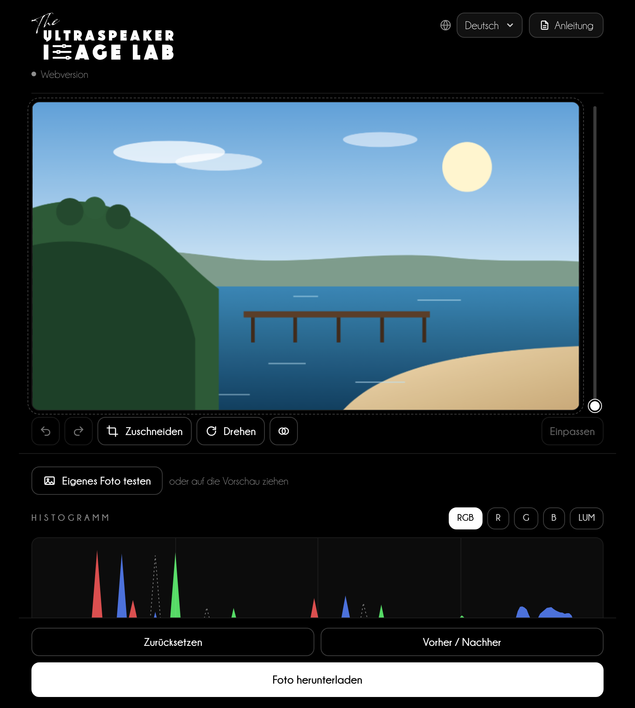
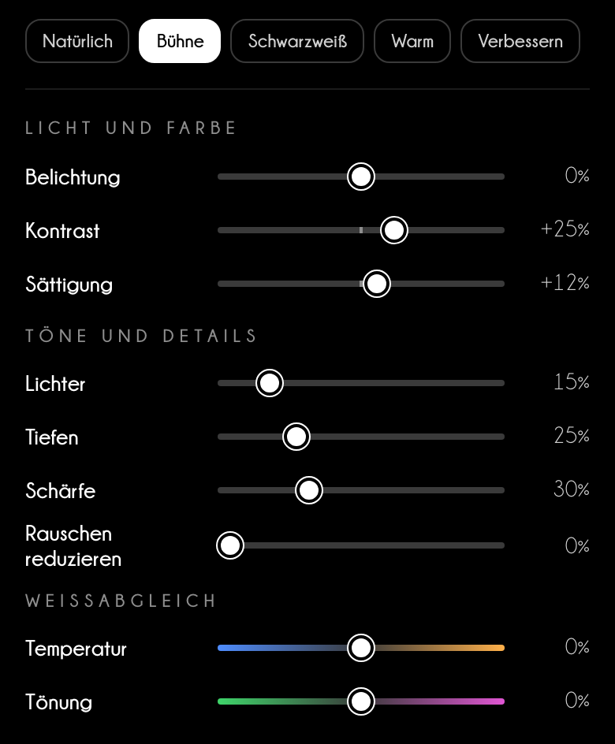
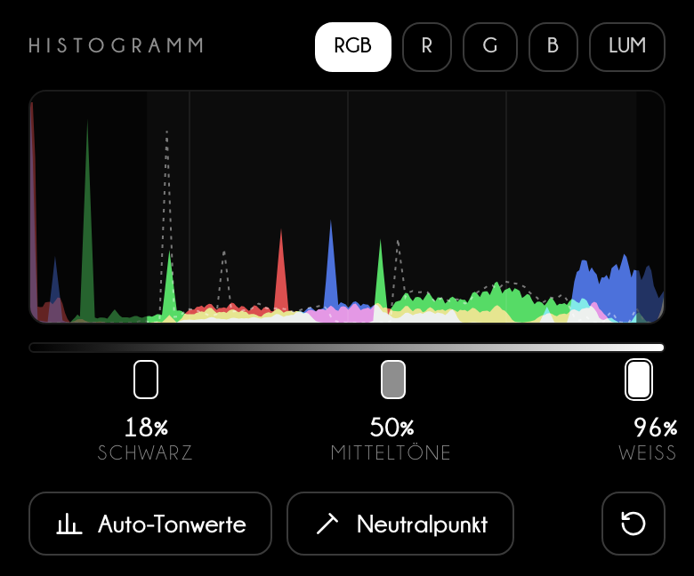
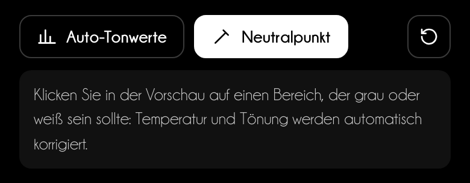
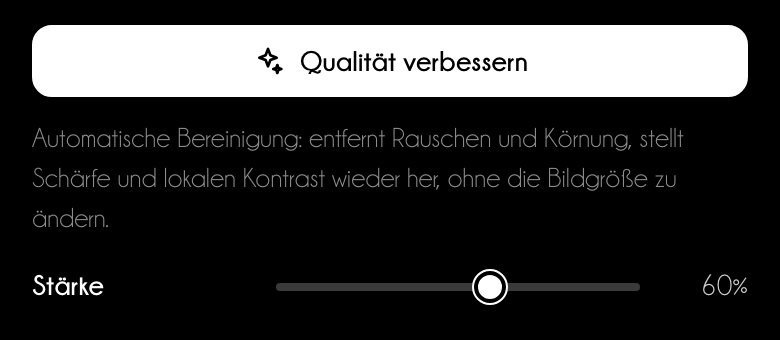
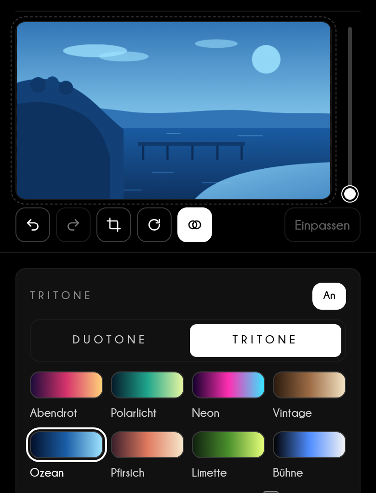
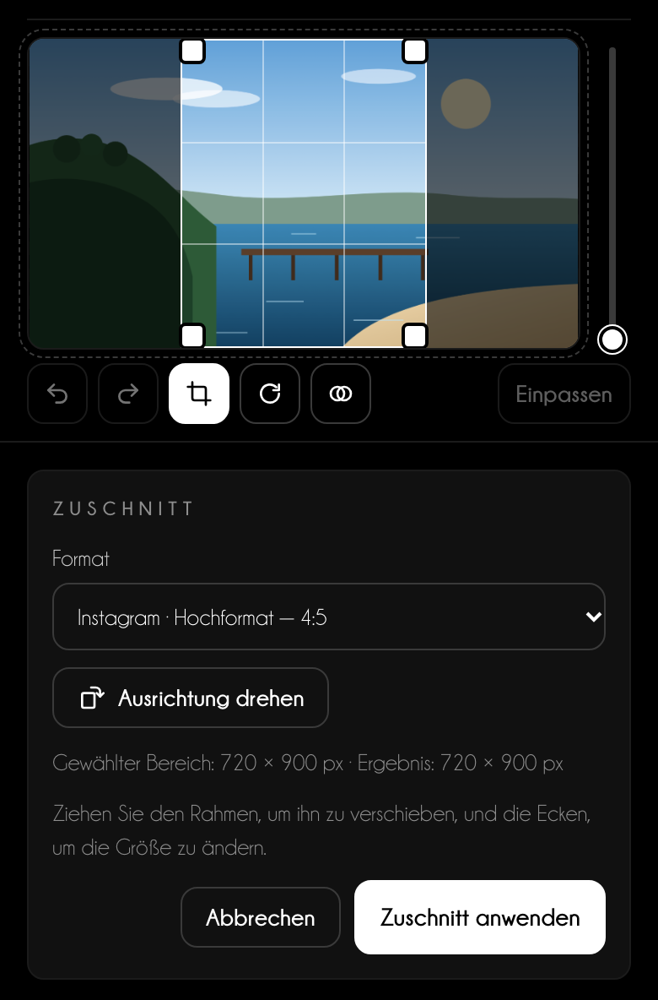
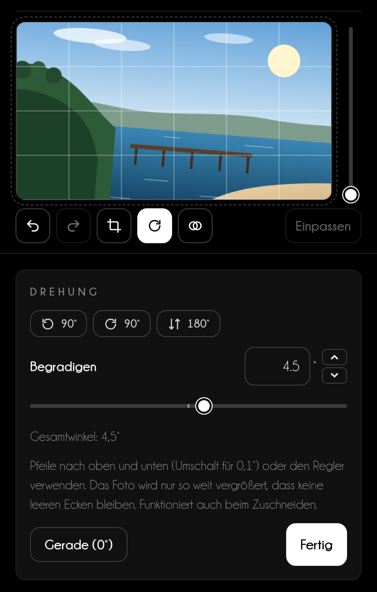
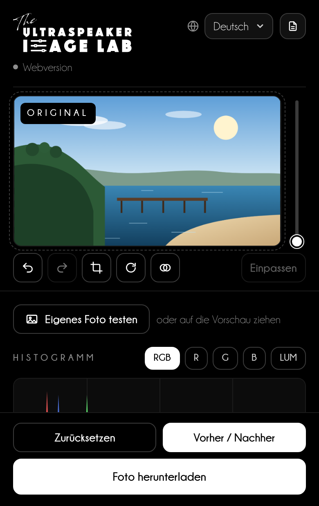
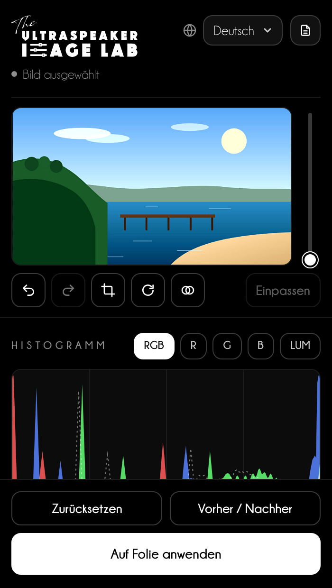

Bedienungsanleitung
Klare, gut lesbare Fotos
auf jeder Folie
Bearbeiten Sie Licht, Farbe, Zuschnitt und DuoTone Ihrer Fotos im Browser und bald auch direkt in PowerPoint.
Bedienungsanleitung
Bearbeiten Sie Licht, Farbe, Zuschnitt und DuoTone Ihrer Fotos im Browser und bald auch direkt in PowerPoint.
Inhalt
Image Lab bearbeitet die Fotos auf Ihren Folien wie ein Bildbearbeitungsprogramm: Tonwerte, Licht, Farbe, Zuschnitt, Drehung und DuoTone, mit der Vorschau immer im Blick.
Im Browser
Öffnen Sie niki977.github.io/ultraspeaker-image-lab am Computer oder auf dem Handy. Sie laden ein Foto, bearbeiten es und laden es herunter: als JPG oder als PNG, wenn es transparente Bereiche hat.
In PowerPoint
Registerkarte Start → Gruppe The Ultraspeaker → Image Lab. Sie wählen ein Foto auf der Folie aus, und der Bereich ersetzt es durch die bearbeitete Version; das Original bleibt erhalten.
Demnächst
Der Bereich für PowerPoint wird gerade getestet und ist bald verfügbar. Kapitel 08 beschreibt ihn bereits vollständig.
Datenschutz
Fotos werden auf Ihrem Gerät bearbeitet und nie an einen Server gesendet. Im Browser wird nur die gewählte Sprache gespeichert, die alle Labs von The Ultraspeaker teilen.
| Was Sie brauchen | Details |
|---|---|
| Webversion | Einen aktuellen Browser (Chrome, Edge, Safari, Firefox), auch auf dem Handy |
| PowerPoint-Bereich | Microsoft 365: Windows 2601 oder neuer, Mac 16.105 oder neuer oder PowerPoint für das Web |
Oben bleibt die Vorschau stehen, während Sie durch die Einstellungen scrollen; unten liegen die Schaltflächen zum Vergleichen und Herunterladen.

1 2 3 4 5 6 7Beginnen Sie mit einem Schnellstil und verfeinern Sie dann mit den Reglern, während Sie die Vorschau beobachten.

Gut zu wissen
Schnellstile ändern nur Licht und Farbe: Zuschnitt, Drehung, „Qualität verbessern“ und DuoTone bleiben so, wie Sie sie eingestellt haben.
Das Histogramm zeigt, wie viele Punkte des Fotos in jedem Ton liegen. Die drei Griffe darunter bestimmen, wo Schwarz beginnt, wo das mittlere Grau liegt und wo Weiß endet.


„Qualität verbessern“ bereinigt Fotos, die bei wenig Licht entstanden sind; Duo & Tri Tone färbt das Foto in den Farben Ihrer Präsentation.
Qualität verbessern
Klicken Sie auf Qualität verbessern: Image Lab schätzt das Rauschen des Fotos, reduziert es unter Erhalt der Kanten, schärft die Details und erhöht den lokalen Kontrast. Mit Stärke wählen Sie, wie weit es geht; die Bildgröße ändert sich nicht.


Gut zu wissen
Mit DuoTone ist die Sättigung überflüssig und verschwindet; Temperatur und Tönung werden zu „Filter warm/kalt“ und „Filter grün/magenta“ und verschieben das Licht zwischen den Farben, wie die Filter der Schwarzweißfotografie.
Jedes Format legt nur das Seitenverhältnis fest: Das Foto behält alle Pixel des gewählten Bereichs.

| Wohin das Foto kommt | Format im Menü | Seitenverhältnis |
|---|---|---|
| Folie im Vollbild | Folie 16:9 | 16:9 |
| Quadratischer Beitrag | Instagram · post | 1:1 |
| Beitrag im Hochformat | Instagram · Hochformat | 4:5 |
| Storys, Reels, WhatsApp-Status | Instagram / Facebook · Storys und Reels | 9:16 |
| Beitrag mit Link | Facebook · post, LinkedIn · post | 1,91:1 |
| Fotoabzug | Foto 10 × 15 cm | 2:3 |
Sie brauchen eine genaue Größe in Pixeln oder Zentimetern? Wählen Sie Eigene Größe…: Nur dieses Format bringt das Foto auf genau diese Größe.

Vergleichen Sie das Ergebnis vor dem Herunterladen mit dem Ausgangsfoto.

Demnächst
Der Bereich für PowerPoint wird gerade getestet und ist bald verfügbar. Nutzen Sie bis dahin die Webversion und fügen Sie das heruntergeladene Foto in die Folie ein.
Im Bereich gibt es dieselben Einstellungen wie in der Webversion; nur der letzte Schritt ist anders: Das Foto kommt zurück auf die Folie.

1 2 3Ein Beamer drückt die Tiefen zusammen und lässt Farben verblassen: Ein Foto, das auf Ihrem Bildschirm perfekt aussieht, kann im Saal grau wirken.
Tipp für Speaker
Beginnen Sie bei klinischen Fotos mit Bühne und prüfen Sie das Histogramm: Wichtige Details sollten weder im ersten noch im letzten Zehntel liegen. Ist der Saal hell, stellen Sie Tiefen auf +25 % bis +40 %.
Tipp für Speaker
Verwenden Sie für alle Fotos einer Serie dieselben Einstellungen, zum Beispiel vor und nach einer Behandlung: derselbe Stil, dieselbe Temperatur, derselbe Zuschnitt. Das Publikum soll das klinische Ergebnis sehen, nicht ein anderes Licht.
| Verwendung | Zuschnitt | Mindestbreite |
|---|---|---|
| Foto im Vollbild | Folie 16:9 | 1920 px |
| Foto auf einer halben Folie | 3:2 oder 4:5 | 1000 px |
| Zwei Fotos nebeneinander (vorher / nachher) | dasselbe Seitenverhältnis für beide | je 960 px |
Support
Schreiben Sie an info@theultraspeaker.com und geben Sie an, ob Sie die Webversion oder PowerPoint (Mac, Windows oder Web) nutzen; fügen Sie nach Möglichkeit einen Screenshot bei.

Knowledge is not enough.
From expert to Ultraspeaker.
theultraspeaker.com · info@theultraspeaker.com